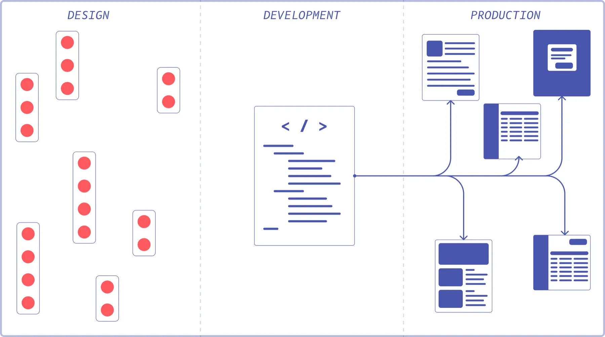
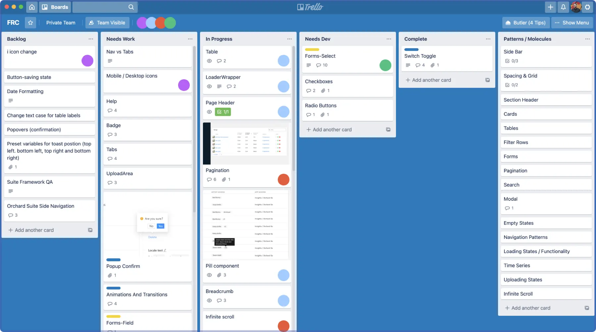
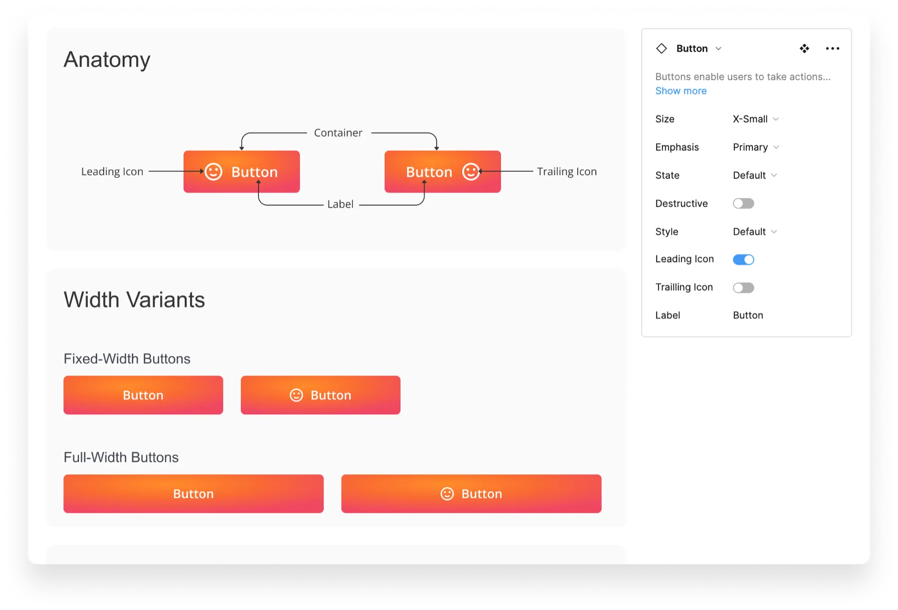
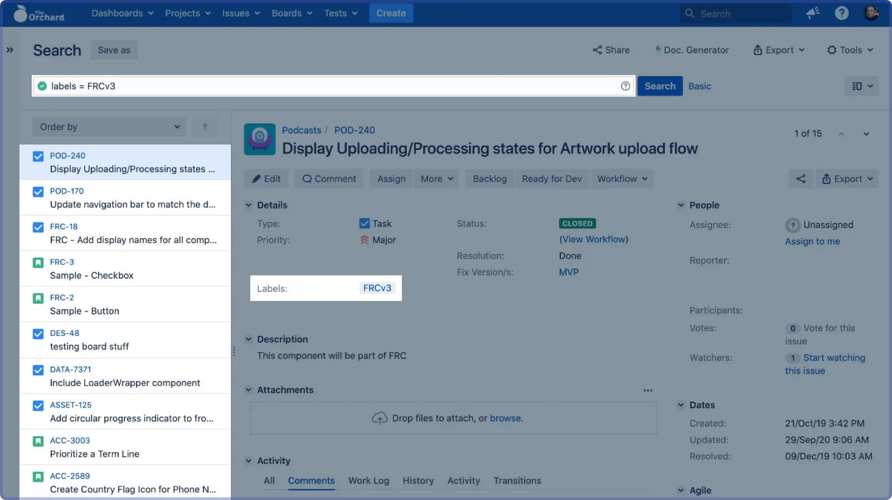
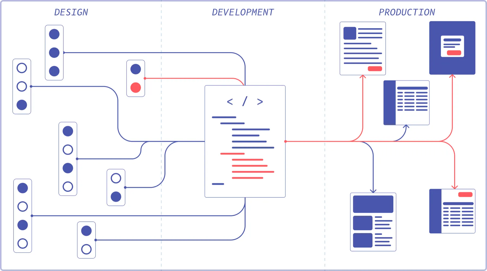
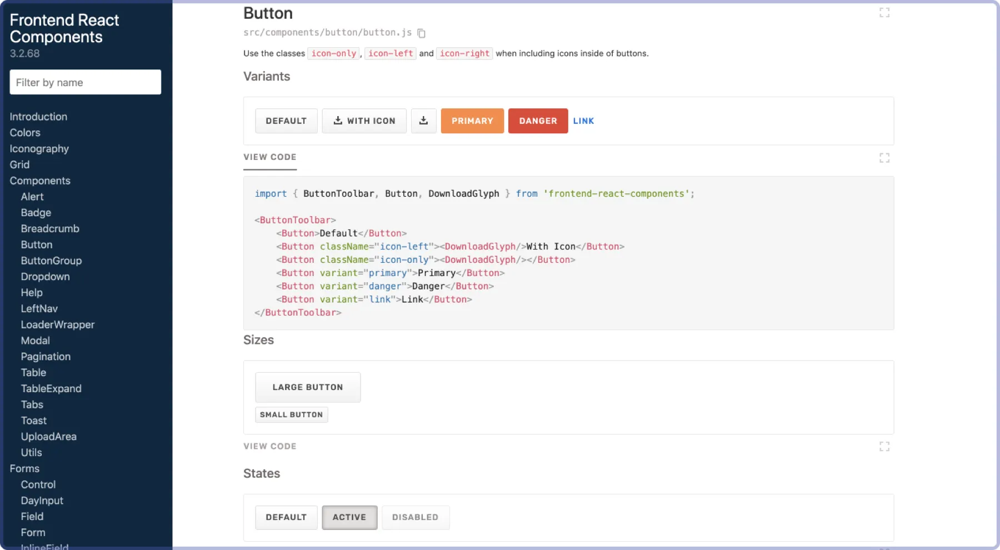
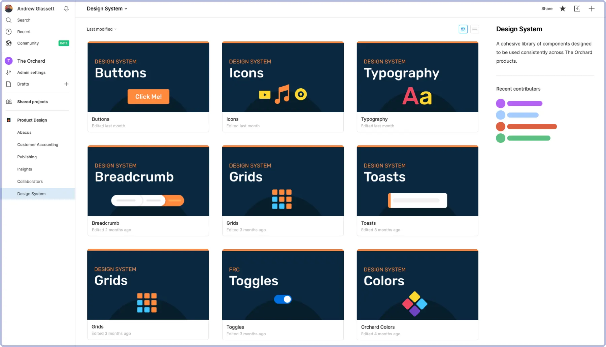

Problem
As the product suite grew, we needed more standardization to ensure consistency. The goal: a design system that scaled with the company.
Background
Everyone thinks they need one. No one knows what it costs.
Most product companies recognize they need a design system, but few understand how costly one can be, especially from scratch. Most companies can use what they have until they’re ready to invest at full scale.
Our initial efforts focused on being complete rather than efficient.
In a lean system, the fastest way to get flow is with the pipes you already have. Upgrading them later may be expensive, but getting water through the whole system is what makes it last. Building a system without the right pipes creates an immediate backlog of ideas that go stale.

Phase 1: Plan
Planning doesn’t need to take long. Consensus forms quickly around the most common elements, and the most common, highest-impact element is a great place to start. Maybe a button?

Phase 2: Create one component
Designers design the button. It doesn’t need to be final. What matters is that everyone agrees on a starting point and the process is quick.

Phase 3: Connect the system
The hardest part is the first connection, because it represents an entire slice of the future workflow. Getting there early leads to larger gains later, and signals to the organization that the system is real.


From here it’s all process, with three things to keep in mind:
- Find an advocate in engineering. Look for someone frustrated with the current front end who wants to create efficiencies. It’s a long road, and they’ll help answer implementation questions.
- Tap into how your org already works. Dedicated design system teams are rare at mid-sized companies. A shared label inside existing workflows beats a separate board.
- Persist until the first element is in production. It’s easy to retreat to the comfort of pixels. Wait until the flow is connected.
The process I designed
- Designers review every week. Designers hold the keys to visual and architectural consistency, so they need to meet consistently.
- A designer shows work that needs “a new something.” The group asks: Is it used somewhere already? Will it be used elsewhere? Does it carry specific business logic?
- Designers add it to the design system in Figma.
- The squad designer files a Jira ticket with the agreed-upon label. This is what ties everything together.
- Engineering decides whether a squad member builds it or it goes to the design system owner.
- It gets built, the designer reviews it, and it ships to production.
A more robust system
Now we could invest in more connections or better pipes. A presentation layer for the code sped up auditing and development.


Takeaways
- A design system is about momentum. Shipping a single component end to end is the quickest way to create initial inertia.
- Put extra effort into the initial scaffolding so the rest of the system is supported.
- Eventually momentum crests the hill and the system starts carrying itself. It still needs guidance, but less and less effort as it grows.